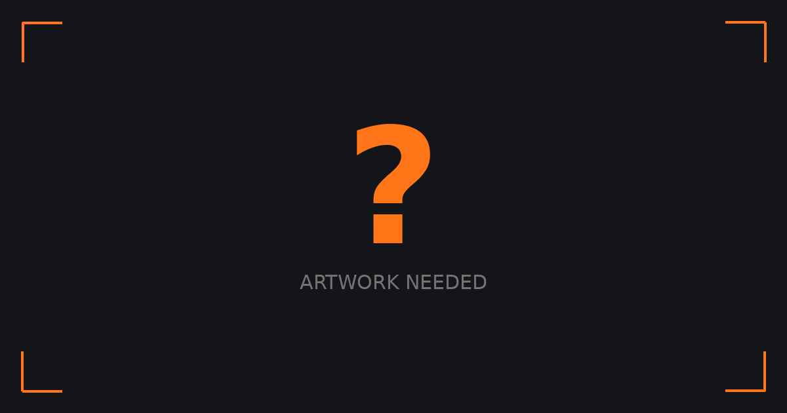

Audio episode. This one was never filmed, so there is no video to watch.
On the side lines of recently concluded PWC Krusevo 2025 edition I got to sit down with Maxime in a tell all tale about how we all can approach the sport of paragliding in a way that makes us want to keep taking to the skies with same excitement as we did when we first tasted the art of flight and his story of trials and triumphs that have been an integral part of the learning
Full Transcript
Automatic captions from Spotify, which provides no speaker labels, so this transcript is not attributed to a speaker. May contain recognition errors.
Introduction
00:00
Maxime Pinot: alcohol is really bad actually after the flight it's the worst idea you can have because dehydrates you even more so there is really no point to drink even beer because there is still this myth about beer that it hydrates you that's totally false You had the calm of Roger Federer, to say the least. That is what I saw on your face. How do you process emotions when
Aninder: things have not gone as per your plans? Yeah, you know, I throw a lot of helmet in my life. So no, I wasn't always like this. It's one of the most
Throwing helmets, and how that changed
00:29
Maxime Pinot: tense moments of my life, career, I would say, because I know that if I lose the zero, I lose the title. So how do you think that, okay, I want to
Aninder: become a better pilot? What is your hard work looking like at this stage in your life? It seems a bit weird to do this, but my... Thank you for saying it so honestly, it's very hard to be open about such things. But if more people can realize that there is a limit Yeah, there is a limit
Maxime Pinot: because I had some cool talks with people thinking that when you do the XL10 after you can fly in any condition, that's really false. Like it's untrue. Our paragliders have limits, the pilots have limits. So at some point, there is no point to fly in some condition with these fucking paragliders.
Aninder: What is up, everyone? Welcome back to your weekly dose of awesomeness here at Paragliding Atlas Podcast. I'm your host, Anindya Singh, and we are coming to you deferred live, but still exclusively from the racing capital of the world, the Macedonian town of Crocevo, where we came for the Paragliding World Cup 2025 edition. And with me today, we have a guest that has influenced our style of flying at some place or the other, and is somebody that a lot of us look forward to whenever he takes to the skies. Maxim Pino, this has been a long time coming and an absolute honor to have you on the show, sir. Hello, everyone. Thanks. Max, I want to start by a little bit of history, if you may. You have been flying for
quite a while. So how did paragliding come into your life and what were the early beginnings like? Yeah, I came quite early with my father. I did
Maxime Pinot: my first tandem flight when I was something like 7 or 8 and more and more between 9 to 12 and a lot of ground handling at this moment because I had a little whole wing and I was around handling a lot and I started flying alone when I was 13 years old. And from there, the journey begins.
Aninder: Thirteen, so that's like just early teens. Did you have some sort of fascination with flying or what was your attraction which kept you going at those early years? At the beginning, my father was flying, I remember, but I wasn't going with him because I was doing also all the
Maxime Pinot: sports, like at the beginning, tennis, judo. My sister is in the French team of judo also. And then when I went one time looking to my father flying and I said, oh, looks fun. When did the idea of doing this full time come to you in your life? Like when did you realize that, okay, this is
Aninder: something that I can obsess over and try and make a living out of it? Yeah, quite early because I always was interested by competition in every
Maxime Pinot: sport. And when I discovered paragliding competition cross- country, I said, yeah, it fascinated me. And yeah, from there, I flew quite a lot near my hometown. And then in France, we have a high school in the Pyrenees where it's supported by the government and we teach paragliding. We train young people to get better in cross- country flying. So they have the schedule for school, the schedule for sport, and you try to make the best out of it. I went there when I was 15, yeah, 15 to 18.
I spent two years there and it's really probably one of the best places you can be to really learn everything you need. So yeah, quite early. One
Aninder: question that comes to my mind is that these sports specific schools usually have a place in everybody's daily routine and it's mostly about sports. Does anybody really even study there or is it just for the sake of it? It's also really serious about studying actually. Even a lot of the
Maxime Pinot: people who went through the whole process, they are now engineers. They really don't mess with the school part. Sometimes I feel that we as a
Aninder: community or like just as humanity try to force normal education on people, although it's a way of discipline, because obviously passing classes and going through the curriculum requires you to have a certain sort of a mindset, which should have discipline, which will help you in the sports as well. But looking from your perspective now, since you have seen that life and now you have lived paragliding all your years after that, do you think studies really matter if you want to become a good sportsman? It matters because paragliding is very difficult to
Maxime Pinot: live from. So yeah, I think in other sports you can maybe gamble more. So I would say that it's still a sport, so it's very difficult from... yeah yeah to just think about living from it even if it's possible but it's very difficult if you are not an instructor or yeah so really living from competition is a it's really you know i agree what i meant is that does reading or putting your thought help you become a better flyer in that way i think it's it's part of the process for sure because when you looked at a lot of pilots here on the world cup tour at some point you you need to
really like think a lot i think like when you see guys like luca on batiste or They are thinking a lot. I think you can do it more intuitively. But at some point, you need to understand a lot of stuff because it's also a matter of intellectual stuff sometimes. Indeed. Your journey over the
Aninder: year has been quite diverse in paragliding. I believe you are going out and chasing the glory in hike and fly and making it count there. And of course, the conventional racing with triple C wings and pod style harnesses. When did the diversification start in your life? Like, how did you eventually think that, okay, these are the disciplines that I'll go in and not acro or spot landing or anything like that? yeah i can
Choosing the disciplines to commit to
06:44
Maxime Pinot: fly it it came a bit after of course i was watching the excel as a teenager and and but it came really after because i spent a lot of energy on the world cup tour and i think the point is turning point when i wasn't selected for one world championship in 2017 And from this moment, I said, maybe I give a try to the XLP. So from 2017 to 2019, I started to train quite seriously for the race. And then, yeah, I kept the process. I also succeeded to be a bit more, yeah, to find some, yeah, a way to manage my time. Because if you want to do both, it's really a lot of energy, time,
money also. So yeah, I would say the turning point is 2017. Max, I want to talk a little bit about the hard work in our sport, because conventional
Aninder: sports, you see a lot of sportsmen going out there and putting in three-hour practice sessions in the morning and something similar in the evening. And they do this either in the middle of their teens or sometime late teens, and then they blossom into a mature player in their early 20s and maybe peak out late 20s and early 30s when we talk about legendary statuses. In paragliding, the sport comes in our lives in very different phases because aviation is expensive and the amount of monetary freedom is dependent upon your status and where you come from and what your circumstances are. So the hard work that we have in these sports is very different for everyone. You had a pretty good start, I
would say. Let's say early teens, you were already exposed to the wings and everything. So how did your hard work look like? Where did you put in the effort that actually counts even now? Yeah, I was lucky to start early, as you said. But yeah, I think something we recognize from people
Maxime Pinot: who start quite early is that most of them, they do a lot of ground handling. So when you pick some... the young guys we have here on the tour there is like a common stuff is that they played a lot with their wings and i would say that yeah if you start with this it's a good point but after when you are more mature and and you have also a bit less time in the professional life and everything To give an idea, to prepare a season with the XALP and some World Cup or Worlds or European Championship, I divided, I trained like between 900 to 950 hours a season. So it's quite a
big amount and it was...
around 450 hours flying and 450 endurance training so yeah it's a big amount of time so you have to always like my weeks were planned so i had to do this kind of training to adapt to the weather but yeah it's a lot of running Let's talk a little bit about ground handling, because I think
Aninder: that is one thing in our sport that not a lot of pilots are willing to do, even though they know the importance of it. Is kiting the easiest way or should you try and do some variations in it? Because a lot of people say that, hey, I pull the glider up and it's standing on the top of my head. That's good enough. That's all I need to take off. So your youngsters who are putting in hours and hours, what does ground handling look like for them? Or how did it look like for you? I think for them, it's fun sessions, actually. Right. Yeah. Playing in the wind. And also there is something
Maxime Pinot: really important in ground handling and you find it in the air. Again, it's brake pressure and stuff like this. And just developing the sensation is something which matters a lot because you find it. in the air so it's better to understand when to use the brake when you don't need because of the pressure and stuff like this and really it's old school like yeah old school to say this i have the sensation that you must do ground handling but it's the truth And it increased your security on the takeoff and everywhere. So basically, it's really a strong pattern that we see when, especially I was coaching in the Pyrenees. So I went through when I was a teenager and now I was coaching during one year
there. And most of them, they have hours and hours of programming. Really, it's a lot. Okay, so let's make it simple for our listeners. You
Aninder: have 200 hours in a year that you can spend on paragliding. You could do 200 hours of flying, or you could do 200 hours of ground handling. How would you recommend, let's say, a 100-hour pilot or 100 to 500-hour pilot, somewhere in that range? which is flying a sea wing, could be a three-liner, could be a two-liner, if they have to distribute their time wisely, how many out of 200 hours should they focus on ground and the remaining on the air? When you want, I think it's a bit general because it always depends what you want to do with your paraglider. It's what's
Maxime Pinot: your goal. And from the goal, you always... when you want to achieve something you would start from the goal and then you do the plan and so it's difficult to answer this because yeah it's it depends a lot on also the place you are living and stuff like this but it's the more you are in the air the better the condition are adapted to your level for sure because it's also one really important stuff And ground handling is easy to do. You land, you do 10, 15 minutes, kiting with the wing, or it's... Yeah. I have some difficulties to say, yeah, you should do 50 hours of grounding, 150 flying. Yeah. Not to put you in a spot, but let's say, should you... Because airtime is airtime, right? Nothing can
Airtime, and whether anything replaces it
12:50
Aninder: replace airtime. You will feel the brake pressure in the air. And this is a dilemma which I feel a lot of times, that it looks flyable that day, but at the same time, I'm like, I still need to work on my takeoff skills or my kiting skills. how much importance can you give really ground handling because ground handling will make you much more confident and airtime will obviously do the same prioritizing airtime versus ground handling was my question and that's the reason i asked that's since you are not really 100 confident on a takeoff i think you you should prioritize on the ground handling okay because i live in nancy and We see a lot of people on takeoff where really you see them. They are afraid.
Maxime Pinot: They don't know how to handle, I would say, normal wind, like nothing. And they are in danger. And it is something that shocked me in the sport because it's too much gambling. And one day, you will be hurt if you continue like this. So... It's always the same. If you are not comfortable on something, on the takeoff, you should still progress in this. Before I move on to the next topic, just to close up the ground
Aninder: handling part, is there a certain time in life when you're like, all right, now I have done enough. Now I can just focus on airtime rather than, because ground handling is tough. You get sweaty, you get, there's dusty and all of those, like your wing gets dragged around. Do you reach a stage in life or in career where you're like, yeah, I don't need any more ground handling. I'm good kind of thing. no i think it
Maxime Pinot: should always keep keep a bit of it like during winter it's good time also you go playing with your wing in the alps we have a lot of spot that you can if you have some some wind you can go playing with the wing at the top of the mountain it's fun it's good training with your wing to train your abilities on the ground and there is a lot of moment and places where you can do it. You can add up during the winter, it's a bit windy. So it's always a matter of dealing with the conditions. So you can basically never do too much of ground handling. It's always a big plus in the sport.
Aninder: Max, whenever we start trying to get better in the sport, let's say we have 200-300 hours under our belt, we start getting more intuitive. Is there a way to understand your strengths? How do you find what kind of flyer you are or what really works for you? Or how did you navigate that?
Maxime Pinot: yeah at some point you need to if you want to really appreciate what you do good and what you do wrong you have to confront to all the pilots because if you are a runner you can have the watch to you know how yeah you know the time you will do for a five gig But in paragliding, if you have not other pilots with you, you never know if you have optimized the condition in a certain place. So I would say that at some point, the comparison with other pilots will really make you grow a lot because it's the only way we have to be more objective in our way to just to fly. Because it's the only
way to compare our performances to see if someone is better in climbing, for example. If you are always flying low in a remote place, or I don't know, you can be the king of your valley. But you will never know if somebody is climbing better than you. So it's really good at some point to... We fly with a group to see, yeah, I can say that I'm climbing quite well, but in the lines, when we are in a glide, I'm always losing and I don't know why. So at this point, you can start asking the good questions. But if you don't go through this process, yeah, you can fly
probably properly, but you will never know what you can get better at. Indeed. I think this World Cup, even though I was not racing officially,
Aninder: was such a big reality check. I remember the first time I arrived in the World Cup. It was shocking. I was good at climbing, but every glide
Maxime Pinot: It was a nightmare. Yeah. I kid you not. I had a pretty good season. I started in Kenya, in Kerrio Valley, and it was beautiful glides. I think
Aninder: 150 kilometers without turning on a 200 kilometer flight. I had to thermal only three times in that 200 kilometer flight. And I was like, geez, you're getting good. And then I come here and I have three bomb bouts in a row. See, it's for sure. You need this comparison at some
Maxime Pinot: point. Max, I want to talk a little bit about hours. Because when we start the sport, depending upon whenever you start in your life and how much
Aninder: freedom you have, some people are thinking 100 is good enough. Some people think 500 is good enough. And then you reach a level of 1000 and 2000. And then there are people like you who are having, I don't know, beyond 5000 or something, you stop counting after a while. And even then there is room for improvement. Have you seen that? What is the amount of hours that a person starts understanding what the game is all about?
Maxime Pinot: Yeah, it's always, always think about according the goals. But what we see people wanting to get to a good level, to a World Cup tour, for example. The thing we recognize when they start a bit from scratch is that they fly really a lot. Like, like we have some example, like François Monturi or, or yeah, I could say a lot of them at some point there was Benoit Houters who did the XALP also. And, but they fly like between 400 to 500 hours because they are really motivated. They want to achieve this. It's the extreme cases because Benoit, for example, he reached the XALP after three years of flying. But in three years, maybe he flew like 1,500 hours, something like that. Every year? No, in total. So 500?
every year yeah wow it's big amount so if the goal is really i want to perform like this of course you need hours and then yeah then when you are more experienced it's a bit different because you learn already a lot if you fly a bit less that's not what will make you worst it's at some point of course if you the you have the world championship in 15 days and you didn't If you fly for three months, you are maybe in trouble for sure. But if you decrease the amount of flying on the year long, in your experience, it's not a big matter of trouble. But yeah, you need to fly if
the goal is in the... I have the interview with Riegel, I think, just before the X-HALP. He said, my goal is to fly 200 hours during spring so I can be fit for the X-HALP in the air. Yeah, it always depends how you are planning your goals. But it's 400, 500 hours is really a lot in this form. It's really a lot because the weather, the time you are... Are you talking about thermic or combined? No, combined, yeah. So, soaring, thermic, whatever. Because they're only tunneling it. Yeah. I don't know how many hours the test pilots, like, I don't know how he's flying, but maybe more than this. Yeah, around that. Are they the ones who are flying the most in this sport? I think so. Yeah, pretty much. They are in
Soaring, thermalling, and keeping them separate
20:19
Aninder: the air every day, every flyable day. Damn, what a life. Yeah. okay max i want to talk a little bit about goal setting that comes priorities change feelings change sometimes you like flying more sometimes you like flying less just like any other thing in life when it comes to goal setting is there is there a way you feel it from your inside or you ask some questions to you or it's just intuition that this is where i feel like or how can you realistically set your expectations versus the effort that you're putting in Yeah, I like to just, you take the goal and you take the
Maxime Pinot: qualities which is required to achieve it. Of course, if you're flying since two years and you want to achieve the first 400 kilometers FIA triangle, maybe it's too early. But I think, yeah, you take the goal and it's pretty, yeah, just... and make the plan from it so i don't know if you wanna if you are a pilot who wants to fly the first 100k 100k at 15 at 15 kilometers average it's yeah it's six hours the thing is to already you can start first from this i need to fly i need to be able to fly six hours so yeah what it means it means that you have to have a good volume because
flying six hours is tiring because even for pilot like me in the world cup or at the beginning of the season flying two three four hours is demanding and in the middle of the city and it's all applied so yeah you start from there so i i need to have good volume so i can yeah endure and i need to fly 15 kilometers per hour during six hours what is required so it requires climbing in thermal because then flying on bar and stuff like this is much yeah it's not the first thing it's really i'm able to stay i'm able to yeah be able to thermal any thermal like a little one big one so
this is the base for me yeah 100k i need all this What's at the moment my quality is, okay, I'm able to fly maybe three hours. It's not enough. So I need to step up to really make my volume grow and be able to stay in the air. So staying in the air is demolishing. So endurance building is one of the
Aninder: key aspects, as you mentioned. Because we don't feel it, but the brain really consume a lot of energy. And yeah, it's what I said at the
Maxime Pinot: beginning of the season, two hours is a lot. And in July is nothing because you need to train the brain and the things aside, like hydration, all this. But yeah, always start from the goal, what it needs. I was going to save this topic for later, but we're talking about
Aninder: it. So how do you fuel yourself for the flights? Can you talk a little bit about your pre-flight meal and mid-flight and post-flight? What does your nutrition look like? Yeah, I was pretty bad at it. I had to get better in a way. Thank you for your honesty, man. Because when you do the XL, it
Maxime Pinot: becomes really an important topic. Yeah. Because... If you are really always focused in the air, sometimes you forget to drink. Basically what I try to do before is to try to eat enough carbs. It's the main thing for me because it's what the brain consumes a lot. and in the air actually it's i try sometimes to eat something but the best for me it's the the hydration powder how do we say the carbs you can do if you can put in the water yeah so just like hydration powder or stuff like this and i try to have between yeah 30 to 50 grams of carbs an hour So for, yeah, so yeah,
it's what I tried to do. It's the optimistic plan. Sometimes you forget to drink or, but that's the idea. Yeah. And, and I have also some gels or stuff like this. I have time too, but my main thing on a World Cup task or stuff like this is it's to have carbs in the water because it's easy. You drink. yeah and you have to train it because it's for people who are really focused in the air it's even difficult to just do this and for me it was difficult and now i try to every time i exit the terminal i try to drink just one sip or two sip it's just my thing just you exceed the terminals
you drink wow That's such a good way of making sure that you stay hydrated, yeah. Because if you don't set something like this, you don't drink. And I was really bad at it, like really bad. How comfortable is pissing for you in the flight? I could have used a better word there. That's the reality. No, no, I have no trouble with this, like with the penilect stuff like this. I know some people, they are unable to pee in here. I think practice, just try taking a piss in the simulator when you're hanging the harness. Maybe that is the way to get better. Some people were really unable to pee in the air and they started to put this stuff at the office or in the car. It's because you have to train this for
the people who don't succeed. Do you have a certain kind of time in the air when you take a leak? Because let's say gliding is one of the least
Gliding, the least stressful time in the air
26:29
Aninder: stressful time. Certainly you're tensing up your core muscles, right? So it's hard to release. There is people under you. That's one way to try and win the task. Just put others concentration on the ground. they are not really happy about it you can't get disqualified for it so yeah you
Maxime Pinot: can have it okay yeah during the glides most most likely during the like the glides and trying to see if there is nobody yeah the land but you can just yeah go away and yeah shit interesting interesting Jeez, man, talks like this make me lose my thought process. I forgot what I was...
Aninder: Yes, post-flight nutrition. I think, I don't know how your general alcohol consumption habits are, but over the past few days that I've seen you here, you have either ordered a non-alcoholic beer or I haven't seen a glass of beer in your hand. Not just for the evening. No, actually,
Maxime Pinot: for me, this competition is I'm here without any goals. Actually, it's one of the first time because after the exam and everything, I didn't want to go. So I think I drink some beers during this week, but I never do normally. Yeah, never. It's really the first time. So now alcohol is really bad, actually. After the flight, it's the worst idea you can have because it dehydrates you even more. So there is really no point to drink a beer, even beer, because there is still this myth about beer that it hydrates you. It's totally false. But... One of the moves sometimes that you see also in cycling, the first thing they do after crossing the finish line, they drink something really sugary. That's a good moment
to do it because the body really requires some sugar after a flight like we do in the World Cup or in the XLP. You really like your calves amount has really decreased, so you really need something like this. I saw this because I volunteered in Commonwealth Games in 2010 and I was
Aninder: volunteering in the cycling section. And I recall, I think it was Irish team or something, handing out cans of Coke to their riders almost two or three laps before reaching the finish. So what I was thinking is that does it make sense that we also sip in Coke before going on the final or before the final turn point or something like that? The powder adoration we were talking about, this is this effect. It's not the same
Maxime Pinot: sort of sugar. It's a bit heavier. Yeah. But yeah, that's the idea to keep a good level of carbs. Got it. but yeah after the finish line it's really a moment where your muscle are and brain are can the muscle can stock the sugar and so it's the depleted levels that you've lost during the flight okay yeah so all the pilots that you see going in for beers at the goal are like easy really worst idea why do we even have that No, for me, it's one thing that it's a bit harsh to do this, but it's a shame to have this in the goal. One side, we... Yeah, for me, it's not professional to propose
beer to pilots at a landing in an official race. I know sometimes I'm a bit maybe not fun enough, but I don't see the point. No, that's exactly what I
Aninder: was going to say. That one side, we are trying to make the sport more professional, And on the other end, we are offering alcohol right away, especially when you're thirsty, when the temptations are at their highest and you're like, hey, get drunk. No, I really don't understand
Maxime Pinot: why we do this. I think every person can make their own decisions. Of course, but... But the image is not really good. They say that they want to upgrade the sport, more professional and stuff like this, but they start sometimes with different things. You can never imagine
Aninder: footballers or anybody getting a box of chilled beer in the locker room after a game. Yeah, maybe in rugby they did this for about 20 or 30 years
Maxime Pinot: ago. Right.
Aninder: Interesting, interesting. Max, before I move on, I want to talk about FOMO, because FOMO is something very, fear of missing out, very common in our sport. And be it wing progression, be it gliding at the highest level, FOMO is one thing which affects pretty much everyone in the sport, from beginners to professionals. Have you decoded a way to not let emotions like this affect you and your decision-making and goal-setting in short term as well as in long term? I see a lot of people around me actually at the moment having this. They always feel that if
Maxime Pinot: they don't go flying when they have some time and the conditions sometimes are a bit on the edge, they still go because, yeah, maybe I'm missing something. But what I say to them is especially that they are not like high level competitors or it's better to have a higher volume in standard conditions than pushing in marginal or really strange conditions because it's where you can get fear and be shocked. The fear injury, yeah. Yeah, I have really a lot of examples of people getting shocked by something, even if it's not the worst thing in the world. Like it's just sometimes a big collapse quite far from the mountain, but it stays somewhere. And it's the beginning sometimes of really seeing
them declining. The level is decreasing because they are shocked. And really it's going without... being pretty sure that the condition fits your level. It's one of the main points in paragliding. Yeah, I think. Okay, this brings me to a question that is a huge dilemma that has
Aninder: remained in my life for quite a while, ever since I started. And I'm so glad that it came to mind right now. That is, to get better, you have to push your limits. But there is a sweet spot where you stop pushing. Because Yeah, you have to push a bit, but it's not so. When we train the
Maxime Pinot: young pilots for the French Federation, what we recognize, okay, we have to make them flying in a bunch of conditions. But I would trade... hundred times higher volume it's in standard conditions okay it's not too windy it's not like high risk of thunderstorm and everything against flying in really marginal conditions because there is still common how do we say the common mindset yeah the cultural stuff in our sport to think that if you really fly in really strange condition then you know better but that's not true if you prepare the excel maybe you have to push yourself in this condition sometimes not always sometimes but if you prepare a walk-up or stuff like this you don't need Yeah. One of
The cultural assumption about flying seriously
33:40
Maxime Pinot: the rules we had when we trained the younger guys is if we would cancel the task, we don't fly. Because yeah, there is no point not being specific in the training. So you are not specific and you take risks. So at some point, there is no point. wow that's such a good analogy taking risk for nothing basically yeah if you see this week as soon as there was really high winds yeah the task was just canceled so what's the point to go flying in 40k per hour wind in your training you will not do it so if you want to be specific be specific Yeah, that makes total sense. And I want
to... Anything you want to add? No, just for I Can Fly races, it's a bit different because there is a bunch of other conditions. It's also depending on the level of risk you want to take. Which is a whole different topic, basically. Risk management is a really big topic.
Aninder: That is where I wanted to come, actually, is that fatigue management, and I'll be very thankful if you can be open about it, but if not, whatever is your comfort zone. Aviation and fatigue don't go well. That's a given. Pilots in commercial airlines have a mandatory rest period for a reason, and that is that your cognitive ability needs a reset time. But we as a sport have developed some branches where fatigue is starting to look down upon and we are glorifying the constant pushing of human body endurance and the abilities. What is your take on a pilot battling fatigue yet trying to go out and achieve the objectives? He is more at risk, he is for sure. Because there is a different kind of fatigue.
Maxime Pinot: Because if you take the XL for example, the fatigue comes quite early in the race. And it's really the extreme stuff. And I remember not being clear in the air because of this. Because you only sleep like four hours a night. And this, so you can handle it one day, two days, three days. And after this, you start to see that everything is getting a bit weird. So I remember one flight in 23, I think, or 21, I don't know. But basically, I was falling asleep in the air. I was at 4,000 meters in really, really difficult condition and still I was starting to fall asleep. I was just
giving me like, I don't know in English. Slapping yourself. Yeah, slapping myself. Yeah, to stay awake. So this is the extreme part. And because I think, yeah, the XR is something, but the real life is the thing. But in a day of a normal pilot, there is a lot of stuff. It can be a stressful life. So you are working a lot and you say, ah, maybe I can go flying at the end of the day. Yeah, it's good to ask yourself the question, how am I feeling? And sometimes we come back to the formal stuff. Most of them, they are pushing, yeah, I will go. And sometimes it
works out because it can be a nice evening flight, but you always have to adapt. Okay, if it's going to nice evening flight, normal conditions, no problem. It's okay. You handle the condition, take off good. No problem. I think it can even make life better also. But it is to go pushing in the middle of the afternoon in strong terms. I think what's the point if you feel really bad? let me try and yeah because i'm coming from
Aninder: conventional sports because human psychology is based on relating our experiences with other things that the other members of the tribe does or whatever the society do to become a better marathon runner there's a reason why kenyans are so good at it because they train in higher temperatures and they are less easily dehydrated than europeans So they willingly go out and test their body's endurance in positions which are difficult. But at the same time, I had Julian, your coach, on the show a few days ago, and he said that this sport is something that you should only practice if you're willing to die for it, which was a big statement. But it is so true. Anything can happen to anyone at any point
in time because air is invisible and we humans are not born to fly. So... When it comes to building endurance, and I can relate to this to my own personal experience. I live in Norway and the FOMO is huge there because we only get three months out of 12, which are realistically cross-country weather. So unless you're an Acro or Spotlanding pilot, you will miss out. And then you see X-Contest blowing up in Alps and this cross-country sending you these amazing stories. So... Whenever I get a chance to fly, I want to maximize my airtime at the cost of fatigue. And I remember there was a flight when I was falling asleep, four hours into it. And it was just a soaring flight. There was nothing that was
demanding. And I was like, I'm pretty high, 1,000 to 1,000 meters above the ground. Nothing's going to happen. So let me just try and nap a little, which was stupid. I'm not going to lie. But the point was that I knew that I had to reach at least 60 hours that year to be current on my C wing. Endurance building, hard work and fatigue. It's like, how do you reach a point where you stop lying to yourself that, hey, this is becoming dangerous. And if I don't stop, this could very well be the last time I'm given a chance by life to do this. Yeah, I think it's also
Maxime Pinot: cultural sometimes, the notion of fear. It's from one pilot to another. It's really striking the difference you can see. And as Julien said, it's also about philosophy. Yeah, am I willing to die for it? Yeah, what I recognize as an instructor or when you talk to people, most of the time they feel it. They feel something inside. Today is something off with me. So I think sometimes you have to trust the feeling. Intuition. Yeah, the intuition. And the thing is, yeah, to always, yeah, to always, yeah, if I don't fly today, Okay, that's okay. That's okay. There will be another flight all day. So for me, it's really the feeling. I have the feeling when something is wrong, I have the feeling that I can know it
Am I willing to die for it
40:39
Maxime Pinot: because my body is giving alerts or... So mostly I think intuition, feeling, gut feeling, there's many names for it. But I have the feeling that most of the time when something is wrong with our state, the body sends some. Have you ever tried to fight your gut? yeah most of the time in a race like the xlp you you go against i talk for myself because maybe other guys they don't feel this fear but i fight a lot of shouldn't yeah sorry to stop you in between but i'm very tempted to point in my experience yeah There's a takeoff in Oslo, which is above the city.
Aninder: Super sketchy. Like literally half a second to abort. If not, you either have to commit or you have to be ready to be rescued from the trees by the fire department. I fight my gut a lot there. That is the only way to make it count. Otherwise, I will pack my wing and go back home eight out of ten times a month or whenever. So... How much should you really listen to your gut? Or am I not putting in the effort so that I don't have to, my gut doesn't have to call me again and say that, hey. Yeah, maybe this take-off is too dangerous. Yeah. No, but really, what I think is
Maxime Pinot: sometimes we accept things that are here, we do it, and we don't ask the good questions. And if you feel that it's recognized by a lot of pilots that it's a really sketchy place, I think there is a problem with the place, not with your feelings. That's the thing for me. So it's... We, I think we, with X-House stuff and we develop also the idea through the community that in a way it's always, it's always possible to take off from here. We saw so much crazy takeoff landings and stuff like this. But actually, not every place is really good to take off. Not every place is
good to land. So maybe the place you are talking about, it's just not helpful for flying. Can't I train myself out of that bad gut feeling? By technique, maybe it's analyzing the takeoff. What makes it so difficult? Is it a cliff? Is it something you can understand and recognize patterns and conditions? I think there is analyzing... the place maybe better to understand better the problems and then you can have a better idea when to go there when not to go there or can i train another way to take off like i don't know cobra or yeah i don't know maybe there is a ways to sort it out but that's why we come back to to ground handling and stuff like this but because if you know a lot of techniques
then you can adapt so you can add up with maybe some technical stuff. But then if the place is really not understandable or it's too difficult, there is no patterns, maybe it's not a good place to play. No, I agree. I agree. That's just accept the truth and stop running away from the
Aninder: reality, basically. yeah yeah there was yeah there is many times we've seen takeoff in places and i can fly races and it's not just about
Maxime Pinot: techniques it's like a bit of gambling how do you make peace with the fact that you challenge your gut when you should not have and still got away with it or you were given another chance that okay how do you look back when you have those kind of instances Yeah, I have good examples. At some points, you recognize sometimes when you are not totally objective concerning conditions. So it's when the part and come back. Today, it's a bit windy, but I know that in some way, my feeling says it's not really good, but I've done it a lot. I repeatedly did it like I have an idea of
crossing in my own mountains. In R&C, I have a... where I know that it's possible. So after doing it a lot, still the feeling is not really good that it will be turbulent or stuff like this, but you can handle it because I have the skids and stuff like this. I have to repeat it, and it's not an extreme situation. It's not 50k win. It's just difficult places to handle, but I've done it many times, so I try to find confidence in this, to try to fight it. And sometimes when I'm really not happy to fight, that I have fought it, I just try to analyze and say, why did I take
this decision? Because maybe I was in competition. I wanted to push more. But since DXR23, also I have really understand my limits and now I'm fighting more demons because of it. Because now I'm afraid in situation that I was not afraid before. And it's a really long process now. So when you touch your limits or you go really outside your limits, it's where the troubles begin most of the time because you shock your brain. True. Thank you for saying it so honestly. It's very hard to be open about such things. But if more people can realize that there is a
Aninder: limit Yeah, there is limit because I had some cool talks with people thinking that when you do the XR10 after you can fly in any condition,
Maxime Pinot: that's really false. Like it's untrue. We can't. Our paragliders have limits. The pilots have limits. So at some point, there is no point to fly in some condition with these fucking paragliders. Yeah, we all are humans after all. Let's talk a little bit about glorification of our
Aninder: sport by social media. It's a part of life that we cannot escape from. Algorithms of Instagram and Facebook will influence us. every single human out there who has internet, which is pretty much the norm. Young pilots will be exposed to these videos or even experienced ones. I don't know if they put data scientists behind it or how they make us feel the FOMO and make us want to do it. But if you are a pilot who is watching only supposedly the good side, because bad sides are not exaggerated as much, especially by the organizations who run these things, they love to show one side of the perspective. How can you as a consumer try and protect yourself when you do not know the unknown that is being hidden
What athletes owe the people watching
48:34
Aninder: from you? I think also it's the responsibility of the athletes sometimes to show the reality of this kind of races or to warn people
Maxime Pinot: sometimes. Because what we've done, what we do during the X-Half sometimes is, in my opinion, it's my opinion, but it's totally crazy. I have seen really crazy things in this race. And it's so crazy sometimes that now I'm not even... There is the shock of 23, but now the motivation is really difficult to keep for me because I said that I think I will not take as much risk as some of them. And it's difficult to me to say, okay, maybe just there is no point because I will never do this. Flying under the lightning is an example of the crazy thing we see. So I think it's part
of the responsibility of the athlete sometimes. The problem is that when something quite crazy on the race occurs, everybody talks about it. It was fucking scary and stuff like this. And when it's finished and nobody talks about it and the media, you will never find something really like the reality of it. Yeah, I think we have a responsibility on it. The problem is now what works on the social media is short videos and we all know what works. And I think it's more going through like maybe podcasts like you do, but also writing and it takes time to just... We know that it's not working to warn people because the algorithm is killing it. So, I don't know. You're becoming a dumber generation by the
Aninder: time. Yeah, yeah. Read on read. The brain rot is real. What is I learned when I was young, I learned a lot thanks to guys like Luc Armand or there is
Maxime Pinot: a lot of guys like him. But because they wrote a lot about the sport. and you can read about their cross-country flying or stuff like this but it's more much more inspiring to read because when you read you are in the mind of someone else so when you read luke for example you are like you have a window on how is feeling the amas and how he's like judging for things so it's really more like it's 10 times better than watching a 30 seconds video 100%
But it's not the way we are going. Yeah, that's quite a shame. And to be honest, like picking up a book because I embarked on this trip almost a
Aninder: week ago, like when everybody came here on 18th, 19th. And I was like, shit, there is a book that no matter what happens, I will finish before I finish my vacation. And it's a very good leadership book if you want to inspire others. And I was like, if I'm running a podcast, I need to inspire others. So let me see, like a week into this and I've had three rest days and I still haven't picked up a book because somehow my brain doesn't. I've made, I studied literature after my high school. And now I'm not reading. Like I'm reading again a bit, but with the fucking cell
Maxime Pinot: phone, like I'm always trapped in screen time. And yeah it's now an effort to do something else yeah when you have a free little free time we should grab a book or read a story of luke or someone else yeah but we just have 30 second bullshit video Do you meditate or do you, what's your way
Aninder: to unwind, basically? My, sorry? Unwinding, taking time away from this passion of, or this is defining your life, I believe. So how do you disconnect from private wedding? I think I didn't disconnect enough the last years and I'm a bit obsessed with it because if there is a
Maxime Pinot: competition somewhere, I will watch the live tracking. Yeah. I agree. Because I know I really like to see, because competition, you see a lot of patterns coming back and you can actually predict pretty well what will happen. Yeah. when you confront the people here the people who are here the condition the patterns their abilities their qualities and their and yeah when you you put all the parameters and somehow you can you can yeah decode the next move yeah interesting it's interesting But yeah, I have trouble to do something else, actually, because it's also my work. And when I was doing something else, it was training endurance, but it was for the Excel. Yeah. It's like the ecosystem. It's the loop. Yeah.
Aninder: Hamster wheel. Yeah. Interesting. No, but what I'm wondering is, let's say, first of all, how does it feel to have number one return on your glider, man? That's kind of cool, no? Yeah, what the super final was, I achieved it when I was the first one, when I was 22 years old. Wow. Yeah, that was 2013, I think? I was checking the PWC. 14. 14, yeah, okay. Damn. And it was really a strong feeling, but it was also difficult to process
Maxime Pinot: after. Because, you know, during five, six days, you reach a dream, and you think that forever you will have the sensation of it, but it's fading fast. Damn. Yeah, it's fading super fast. And it's always the same. And then I was world champion. And yeah, it's still the same. The only difference is two days after I was at the X-Alps. I had no time to process it. But after all this, there is always you have the top sensation and then super fast, you feel a bit empty. You reach something you wanted quite dearly. And then, yeah, it's... what am i doing now yeah it's it's so you have the up and sometimes a bit the down after it the super final this time was was a bit different because i've done it one time before but
The ups, and the quieter parts
54:47
Maxime Pinot: it's sometimes the world cup tour in the community is not well understood it's not because it's it looks really difficult to understand the scoring yeah but complicated for me the guys flying here The top 50 are really strong with the glider. They are really strong. The density of pilots is growing. When you start to achieve things, your technical, tactical level is pretty high. But still, do you look up and
Aninder: feel good that there's number one on your wing? Yeah. Damn, man. Good thing. The reason why I ask that is because, of course, getting number one on your wing is not an easy task. It requires sacrifice, dedication, like the whole story behind it. Because reaching the pinnacle is hard enough, but maintaining that level is even harder from outside. what I've seen. So how do you think that, okay, I want to become a better pilot? What is your hard work looking like at this stage in your life? For me or? Yeah, for you. Where do you pick up your sources? As you said, like reading, where's your trust factor at this moment? It seems a bit weird to do this, but my confidence level is really low actually at the moment
Maxime Pinot: because since I will talk about it, it's pretty personal. But since 23, I really like struggle with paragliding. It seems totally like, yeah, not rational because I was in 24 like European champion and the super final. But I'm really struggling with training because of the X help and how far we went and how far I went in these conditions because it was the worst condition of my life. And now I have to face really a lot of doubt and I feel sometimes really uncomfortable in the air. It's like when I have elements of the context, high wind, high mountains and being alone, it's really difficult for me. So Yeah, I have to fight this. I work with psychologists and everything because it looks a lot like
post-traumatic stress. So there is also someone here studying the subject about paralleling. It will maybe be the first subject about it. But it's another topic. But I'm fighting this. And when I have no elements of the context, like in the European, it was gargling, flatlands, not really windy. I can fly to my best level. But sometimes when I'm flying at home, in really classical condition in the arts it's very difficult so yeah that's why also i struggle a bit with motivation and stuff like this so it's really when you see the results yes yeah it's at the top level but i don't have this feeling actually at the moment damn sorry to hear that man yeah it's the process but it's also a good yeah a
good reminder for people that what we do sometimes in the this race i have maybe some other race but this one yeah it's it can be shocking sometimes it shocks some people You mean the Alps or the World Cup? The XL. No, because the World Cup, yeah, you can solve the task. Yeah. Yeah, if something is really dangerous, I have, of course, some tasks, maybe we went a bit too far, but most of the tasks we do, it's really safe in the end.
Aninder: So even though PWCA puts beers at the goal, but it still doesn't make us look stupid in the air. Yeah, sometimes we do stupid things, but most of
Maxime Pinot: the time it's okay. Yeah, true, true. Well, thank you for sharing that. And I hope you catch your mojo back. Is that the way? I'm working on it. You
Aninder: know, I actually wanted to ask you this because I myself have this question a lot of times. is that nobody talks about the real cost of chasing passion. Because first of all, finding passion doesn't come easy in your life, right? There are a lot of aimless people out there who are finding enough reasons to just get addicted in one indulgence or the other. Could be smoking, could be drinking, gambling, whatever. Could be gaming, could be scrolling. So finding passion itself is a blessing. And then finding the courage to chase the passion is the next step. But then going all the way with that courage, keeping motivated, playing your cards right, putting in the hard work takes a lot from life. I was
talking to Will Gad on the show a few episodes earlier, and he said eventually the point is to look back and say that I have lived a good life and be happy with the fact the way you have spent it. So we do find a lot of meaning in pursuing passion up to the highest level. But the real cost that is behind the scenes that nobody except you, maybe your parents or maybe your close contacts, like the ones who see you very often only see that. Is it really worth it, man? Yeah, I think it's worth it. But because if you... Yeah. I think sometimes life is a big chaos, but you have in a way
Maxime Pinot: to find something that makes you happy. So it's what Will said probably, but if you don't do it, then what would you do? Yeah, but sometimes it costs a lot. I mean, because when you don't succeed, you get like upset and sometimes you don't find solution. And also sometimes when it's a big part of your life, you can feel like, yeah, I'm... yeah sometimes you can feel a bit like and if i lose it what would i do i will be lost yeah if tomorrow you say to me okay you don't do you can't do paragliding anymore yeah it's i would love to change a lot of stuff yeah it's in one hand it's
What it costs when it does not work
1:00:41
Maxime Pinot: yeah it's sometimes difficult to to handle to be a bit obsessed with something but it's also what makes yeah life a bit better i try sometimes there is this famous quote of i think charlie chaplin Okay. Sometimes I'm too much pessimist or maybe too focused on the stuff and I forget to look around. And I try to always think that, I think the quote is, when you shot someone in close-up, it's a drama, but when you shot the scene, you zoom out, it's always a comedy. like it's because when you focus like too much on on your problems you tend to be a bit too much dramatic but it's
only part gliding it's just yeah it's so when you zoom out sometimes life is good it's you just have to remember because it's easy to just yeah be angry to yourself yeah Well, I mean, like, again, like, because Michael Phelps, like, how did he become the greatest? Ears staring at the black
Aninder: line in the pool, sacrificing on so many things. Swimming is a... Yeah, a 50 meter, like, you're literally a human fish in a pond. Like, you're
Maxime Pinot: just stuck there for... In the Pyrenees, there is also swimming structure for it. So we saw, we see them like six in the morning already. Yeah, doing the laps. Yeah. okay okay let's talk about what is your best way to get rid of switch off that is what i i think asked you earlier like
Aninder: how do you distract yourself before the obsession becomes too much because a little bit of obsession is needed or maybe a lot of obsession is needed to reach the place where you have or anybody else wishes to but how do you make sure that you don't enter a burnout or how do you come out of a burnout whenever you do because it hits us all Yeah, sometimes I need to fly a bit less and do something else. Be able to go just on vacation
Maxime Pinot: without the wing. But it comes back pretty fast. but now it's always also about I see a lot of people also I was doing the same when I was a young pilot when you raise the bar really high it brings always a lot of frustration so sometimes you have to set the goal a bit lower so you can achieve them and yeah going a bit more step by step and because sometimes i see a lot of people like yeah getting really upset or frustrated because of but yeah
Aninder: I'm so glad you mentioned this because I'll tell you what, yesterday was tricky as hell. For the listeners' context, we are talking about the last task of this Paralympic World Cup 2025 in Macedonia, where would you like to talk about the task? Because you were obviously much further off than me. I just went really far in the task, actually. But, yeah, it was south-southeast wind, pretty stable. Yeah. And in the flatlands,
Maxime Pinot: yeah, it was mainly the beginning of the task was mainly Halloween. Yeah. You start with the most difficult part and, yeah, tricky task. So,
Aninder: anyways, the reason why I brought this up is because when I came to this World Cup, I'm flying a Triangle, which is a two-and-a-half liner, and there's no way it can keep up with triple Cs. That's a no- brainer. so my idea was to just learn watch the lines that you guys take try and circle and of course i have failed unfortunately in all of my objectives yesterday when you guys were gliding out and i saw a lot of triple c's super low you know some were landing some were almost at the time of landing and i was like don't even try like this is not gonna go well for you
And I came back and top landed. I somehow made it back and top landed. I was a bit frustrated. I was sad. I was like, dude, because the other tasks I made, at least one day I made the first turn point. The other day I made a second turn point. And this win, I didn't even try the first turn point. So I was like, I'm failing in my objectives. I was disappointed. And then I bumped into you at the packing area at the hotel. And you had the calm of Roger Federer, to say the least. That is what I saw on your face. how do you manage to not be mad or how do you process emotions when things have not
gone as per your plans? Yeah, you know, I throw a lot of helmets in my life. So no, I wasn't always like this. It's also, we talked about it, but I
Maxime Pinot: have, on this competition, really, I had no goal just to try to enjoy a bit. So that's not high frustration to be landed maybe too early. In another competition, I would have probably more upset. But on this one, yeah, it's okay. Like, it was part of the deal. So... I had really no big stuff coming, but i think one of the to be maybe a bit more constructive when you it's important to know how to even in the air to adjust the goals yeah the conditions are not the one expected what can i do different from i had the big plan but now maybe the big plan was a bit too optimistic what
What can I do differently
1:07:03
Maxime Pinot: can i do what can i do different what can i do i can maybe focus on it Technical stuff, you know, with the young people we coach, we focus a lot on thermaling. So there is a nice game we do with them. It's the king of the thermal. Okay. So yeah, you have to always, it's the one who is at the top of the thermal, really at cloud, they win, basically. And the idea, when it comes to terminaling, we work a lot on one rule. If someone is under you, really, if he outclimbs you, it's a shame. So it's the little game we do, like it's refocusing. Okay, we can't maybe do the big cross-country
flight we wanted, but we can still fly terminals and we can play this game with people. So, yeah. it's refocusing on something else sometimes but yeah then the managing the frustration then it's yeah it's i had a lot of trouble with this when i was young so maybe i learned step by step but i remember competition i landed And during two or three days, I was upset, like really unable to change my mind. And in these moments, you need to, I think, it's really personal stuff. I think it depends on people. Some of them are forgetting really fast and be able to be like 100% for the next
one. and other pilots they need to do something yeah so yeah it's it really depends for me yeah it took years to yeah to be at peace when i've done something a bit wrong is there a suggestion or advice you would give to somebody else younger on who's struggling or who wants to be a bit more peaceful with not achieving Yeah, what I mean, there is a really... Sometimes refocusing on the fun part is important, but I think it's where we always try to start a bit early also with the people we coach is the mental preparation with someone who knows the keys and who understands what you need. Because it's really personal, it can be... Like maybe throwing your helmet is part of the process and then you're
okay. Better the helmet is not too expensive, but maybe it's part of the process. You throw something and then you feel a bit better. Maybe it's, but I don't know, but we are joking, but everybody is different on this level. Right. Because, yeah, Honor, for example, is... he managed this really good like frustration he learns and then a few minutes later he can smile and okay I will be able to win the day after even yesterday is another example because the overall ranking was quite far but he didn't lose the fun about yeah I have an opportunity today and he catch it and
Aninder: yeah i was surprised because a lot of other pilots who had not done the work that he has done over the years would be just frustrated and giving up i think he was in 80th or like some crazy position yeah yeah it was quite hard yeah and he got on the podium simply because of that skill and perseverance and yeah yeah and doesn't lose the fun and if there is the opportunity yeah he's always here yeah i can count on damn I want to get to skill development, but since you mentioned Honorand, how is your relation with Honorand? Actually, really cool. We know each other for a
Maxime Pinot: really long time now, because I think since we are 14 or 15 years old. Oh, wow. Okay. Yeah, 15, I think. And yeah, it's always since the last big competition, we are always in confrontation. Yeah. There is some part of the competition where we are super focused. There is, I think, no tension or it's the game. For me, it starts to be funny. And we know now it's each other, really the strong points, low points each other. Yeah. And I remember the last task of the European, this guy, he was giving everything. I saw it in the thermal, like super precise. And I was thinking I will never be at rest with this guy. i have to go all the way just and i it was a task you're talking about task eight it was the last one yeah
the glide ah you mean on the wells maybe the one which only you and him so this was the world championship okay on this one he made this special thing special move say i will try to make them land all on the speed section because we went on the glide really early i know the place really well we know that at some point we will face the valley wind and and i saw him leaving the terminal super early and i think i thought it's the moment it's really the moment where you can win or lose the world yeah and so he attacks everybody super low yeah and in this valley normally you
don't find any thermal It's a really green alpine valley with a lot of valley breeze. And he managed to find one. I just arrived grabbing the stuff with him, but it wasn't climbing. It was a zero, but it was helping us to get closer from the goal. It's one of the most tense moments of my life, career, I would say, because I know that if I lose the zero, I lose the title. But it was the special move, a cornering, a special one. He really likes the situation where he's low and everybody's with him. You don't know how, but if only one of us can make it, it's him. That's for
sure. What's the secret? The secret is, I think he's more relaxed in this situation than someone else. I think also that he comes from the flatlands, a bit like me also, but at the beginning and you work a lot on low saves and there is a lot of learning and this really a lot is really relaxed in these situations. And the termaling wise is super strong also. So he's just put in the work basically. Yeah. For me, it's a skill that he developed because He's coming from this part of France where you fly in a flat, so yeah, low stage a lot and it's all together, it makes him
super strong in this moment. I think your kind of friendship rivalry in the air is like Nadal versus Federer kind of a thing for our sport, no? Yeah, I like it. When he came back yesterday from the flight, I told him, you were lucky as hell as always. That's the first thing I told him. Because it's a joke, like, because he's always in the good plan when something is a bit, like, when the task is a bit, like, weird or he's always in the good plan. So it's a joke we do. Yeah, my instructor said that paragliding, people who win in paragliding are usually really
Aninder: lucky. But why is it the same pilots who get lucky all the time? Yeah, when you, now you can rely really on the world ranking. You can predict quite
Maxime Pinot: easily. how what the world the ranking would be like on the competition because there is like really big profile like honor but also sebas ospina is super strong like in the moment baptiste and when there is this guy if they are not on the podium yeah it's a problem messed up but yeah yeah Do you ever check your rankings from time to time? Or are you like, why is this or why I should be at there? Yeah, I watch the ranking, but as I said, I watch a lot the live tracking of a lot of competition. And because for me, it's really important to know really the qualities of the pilots
here. Because when we think about paragliding, we think a lot about analyzing conditions and stuff like this. But in a task like this, when you are 120, It's maybe shocking for people, but sometimes for some pilots, it's the least important things. The wind cumulus. Because they don't process it like this. They just process the tactic. Who is with me? The group is doing this. Is it good? Is it not good? But some pilots, it's just, okay, the group is here. I follow this. I don't need really a lot of analyzing the condition because there is an RN in the group. He will do the analyze because he is someone who attacks. So he needs to analyze the condition. But some of other pilots... They are
technically super strong, but in terms of analyzing conditions, stuff like this, they don't need it to be performed. That's quite the game sometimes. No, one more time. I don't understand that. So in this competition, so for sure there is the conditions. So some of the profile, like myself, we have a profile of more like... attacking pilots figuring out what's going on we need to do to analyze the condition but some of the other pilots yeah they are super strong tactically they are really strong technically and they don't need much analyzing the condition they need to analyze the pilots with them so they're letting you do the work and yeah but it's not i'm not saying that
it's better to be like this or like this it's a pattern which works really well okay basically yeah in this competition analyzing the condition is not so important for us some can do the job and let the professionals handle it yeah and but they are really good in lines they are really good on choosing the speed they fly they are really good in in terminals that's not the problem it's no problem actually but their strong point is the tactical analysis okay indeed that helps that's what i wanted to do but my glider was different so let me let me use that as an excuse Oh,
Aninder: man, this is such a cool conversation. I don't want to deviate because talking about you and honor is like such a, it's a never ending topic. But do you guys ever talk about that? How long will you always have the edge or there are others coming up and challenging your dominance? Or how do you have that talk? Because you guys are pretty much the top two. in most cases. We see a lot of people being like Baptiste. He's crazy strong.
Maxime Pinot: Also, there's Marcos. You see the young Spanish pilot. He's 18. No way. There is really a lot of young people now who are coming fast. In France, we have Thilo. He did eight in the competition here. Daphné. she did really great i don't believe how she do what is she doing right because she's flying her e and diving and still landing in the goal with the first gaggle yeah tactics she relies a lot on on tactical stuff that we learn them to do so we have rules actually when we train them can you give me some of them please yeah we have basic rules like you rely a lot on no not for the
show just give it to me later so i can use it No, no. In this competition, you rely a lot on how much people you can control. You can reach with your glide angle. And there is one rule, for example, if someone is climbing in your reach, if you don't go, you break the rule. it allows you to always secure your positions and stuff like this yeah wow yeah so yeah so there's a lot which has gone on behind this good decision making yeah yeah that's interesting that's why we've we try to because tactics sometimes it can with the situation sometimes can It can be difficult to
think fast, but they are learning a lot. And with this kind of rules, which are easy to apply, you can save them sometimes in the decision-making. Okay. It's climbing. It's in my reach. If I don't go, I break the rules. I go. I think the same with the hydration, that every
Aninder: time you leave a thermal. Yes, you can apply the same on many things. Do you have a number? How many rules do you have? And are they open for public sharing? Yeah, it's open. I think the best to talk about this, yeah, maybe you talk about it. Yeah, we didn't talk about rules. They didn't tell me that there were such important rules. Man, I was telling him I should have the whole French team on the show. There should be a collective group podcast. Yeah, now also there are some rules like this, but when you are in a situation like you start to be in a difficult
Maxime Pinot: situation, the first move, the first thing, the only thing you have to do is to have one control on somebody else. You have to try to find someone to rely on again. It is something we try to teach early with the pilots who start competition because If they rely only on their analyzing of the conditions, stuff like this, they bomb out really a lot more. And the idea with these simple rules is that they increase their volume with the goggles, they see more situations, so they grow up in experience way faster. Interesting. Cool, yeah. No, thank you for that. Okay, let's
Aninder: talk about skill development a little bit, because this was the topic that I supposedly saved earlier, but I know we have to get back to the celebrations that I'm pulling you out for. 125? How many pilots are we here? 130 here. 130, right? 130 pilots in the air, Max. And you max out every single thermal, comparatively. Is it because your name is Max? No. What's the secret behind things so well? Yeah, I think it's a lot of
Maxime Pinot: experience, but also it's, I think one thing which is really important in termaling is your ability to have a 360 vision. Like always find... Find the right information and be able to process it really fast. Okay, when I turn this guy, maybe he's climbing a bit more than this. Maybe I wait a bit more. And if I confirm, yeah, I move super fast about it. And it's always about... The vision. There is one thing we also teach to the youngsters. It's when you are in a situation with pilot terminating with you, there is something, it's quite funny rules, but if you don't have a good feeling, if you are not a pilot with like something in the hands, like feeling stuff, at least you have your eyes. Yeah. so observe
so you can move faster the pilots climbing better you can move fast and i think in this situation in gago the vision is top one in the rank list because uh the feeling is super important but also you have to deal with the crowd so you can't rely 100 on it right but you You have a lot of people making the job around, so if you don't use it well, then you don't climb good enough. Solo thermaling, going on cross-country, what's the way
Aninder: to improve your thermaling? Except practice, which of course will answer a lot of questions, I believe, but is there some things, because... I have been struggling with hobbling a lot, especially with my left-hand turns. Like, my right-hand turns are so much more better. And maybe this is just my muscles. I don't know. But I'm just lost at this moment, to be honest, on where to work on. Yeah. It's really a topic we
Maxime Pinot: talk about a lot. So thermaling, then it's the endurance pace of the pilots. If you don't thermal well, at some point you will not continue to progress. so the idea is i have there is a pattern pattern we recognize also that a lot of pilots who are terminating really good at their really beginning they didn't fly a lot with a variant okay so It's something sometimes when you didn't do that, it's sometimes cool also when it's easy conditions and to just cut the very, to be able to process everything without it. I don't say it's during big cross-country flight because for sure it's... But sometimes to cut it and just to rely on the sensation is important. And something we do really a lot is,
especially with people wanting after to go to cross countries first, you just do your training just on site. Like you climb, you go out, you go back in the climb and you do this. And sometimes we have trainings, it's this for three, four hours long. Wow. Yeah, it's really repetitive stuff, I think, internally because you develop the feeling, but the feeling, it's also the feeling with the wing you're flying. It's all this kind of stuff. So for me, sometimes it's better to just stay around, around the places you took off and just do the job again and again. Then I see a lot of pilots that just, they climb, they go, they land. because they don't have yet the skills to handle any kind of thermals. And so it's
better to just spend more time in an easy spot and do it again and again. And that's how most of the really good climbers do the job. And then that's important because when it becomes automatic with some things, you can start analyzing the conditions. And the more parameters you are able to process, wind, inversions, which altitude and everything, the better you will become for sure. Another thing which is important is also in the piloting, you have to try to... So in the piloting, for sure, it's dependent of the thermal form and thermal strength and everything. But also you have to try to have the less parasite movements as you can. Parasite? Like, no, it's not the word. Maybe the less raw
movement, pitch move possible. Because why? Because you are... With this, when your piloting is too much, not precise enough, I would say. Not accurate. Yeah. Then your sensations are forced because when you have a lot of pitch, you don't know if it's the core or if it's just the momentum. If you have too much wall, you are not precise. And it's also, most of the time, it also makes your information from the very, very false. So this combined, you don't climb well because you don't place the turn when it's the time to turn. That is so true. Geez, why didn't I know anything about this? Yeah, having a glider which is like, yeah, pretty stable over the head is super important in thermaling. Makes
Aninder: sense, makes sense. Okay. Yeah. Jeez. This is the last topic. I know we're running out of time here. Second last, because the last one is a story time. Wing progression, Max. And I really want to touch upon this topic from an experienced pilot like you. I might be guilty of this myself. And I've seen a lot of people do this, that we progress wings way too quickly in our sport. And we almost never fly them to their lifetimes. We are throwing away our wings much quicker than they are finishing out their lifestreams. ENA wing is a beautiful place to start. Maybe low B is your first preference. But the marketing from the industry is low B, mid B, high B, three liner C, two liner C, two liner Ds.
And of course, triple C is a whole different class. And every manufacturer goes out and gives out different good points about their wings. But as a consumer who is looking to progress, can you put emphasis on airtime or how should you define your upgradation of wings without lying to yourself? yeah for sure we a lot of pilots go really are too crazy about about the equipment stuff yeah because yeah what we see as we coach
Maxime Pinot: people all around the year we see really closely the progression and before getting to the edge getting to the limit of the wings where you Where it's really time to change, there is a lot of work. And also what we recognize is when we tend to actually do the opposite. We say to the youngster we coach that it would be better to keep it with just... try to keep it more so they are a bit upset sometimes but when they step up there is a huge progression yeah because they are ready and yeah what i say to yeah to people it's when at i think it's yeah in competition it's pretty
easy to see if it's the moment of change because you are comparing with people your skills and stuff like this for people who are flying solo it's sometimes more difficult but when you see the performance of the b-wing actually it's it's crazy how long you can you can keep it actually So I think you can change when you have really understood every aspect of the speed range and everything with the speed bar and you really feel confident in any condition you are flying. So yeah, it's... There is another problem with the sport is that most of the people, and that's the big problem, they don't have a really outside opinion of really, really good pilots giving them advice like coach or stuff like this. They
really rely on themselves. And that's a big problem in the sport also. So sometimes, yeah, getting back, I think I didn't answer the question really well. No, I'll simplify it for you and also for our listeners. Because, you know, that reliability of information is why this podcast
Aninder: exists. So when do you know that you have maxed out your Wink? Is it your full stall that now you can do any full stall, as many full stalls as you want at any time? Or is it that 60% asymmetrics don't scare me and I'm okay with it? Or is it that full bar I can go even hands off full bar at times? What are the metrics that tell you that now you have maxed out a Wink? Yeah, I have a problem with... You spoke about full stall and
Maxime Pinot: asymmetric. The problem is when we talk about SIV, it's not true. Yeah. And for me, it's not... It can be, in a way, yeah, it's good. You handle full stall, you handle a collapse, okay. But the most important for me... is that you don't have any collapse when you fly cross country because we speak a lot about yeah managing when it's when the collapse occurred but we don't speak about the little all the piloting before the brake pressure b pressure or c pressure And the little thing that makes you really comfortable with the wing in really specific conditions, not of a lake. And this is when I think this is the moment when you recognize that you are really comfortable with the wing. Maybe you are
really like, yeah, you have maximized your progression with it is when you can, in most of the situation, be able to predict how it will behave. Okay, so you mean you can predict a stall is coming? Yeah, you can predict a stall is coming. You can predict that there is this, for example, there is a climb a bit on the lee side, so you will be still comfortable in this condition, a bit bumpy. You will have the right piloting, so no collapse, nothing. Because a lot of pilots, it's funny because after the flight, I had this big collapse and I'm always like, what the hell?
Aninder: Why did you let it happen? Yeah. And we don't talk enough about piloting before all the sketchy thing we can come to. Okay, is it physically possible to prevent collapses? Or will they just happen because the air is air and you can never really... You would have had collapses and you have been piloting just like any other beast. It's not a lot, actually. Okay. Yeah, it's... I think, yeah, of course, everybody had collapsed,
Maxime Pinot: but... really one of the thing we i think is that when it occurs a lot there's really a problem there's like pattern yeah really a big problem with the piloting because it's not normal so then you have to analyze when you have a collapse so it's really important for me to analyze like why yeah How were the conditions there? Is there an explanation? I have misread something. So it's analyzing the condition and then the piloting. What did I feel? Why was I unable to just stop the stuff before it comes? And, but for me, it's always, when you had to call out a significant one, like the tip, significant one, it's always take five minutes to understand why. Because it's not, yeah, it's really
important. Something was wrong. Indeed. And yeah, it's, it's really, yeah, it's something showing you that something was wrong. So you have to. reflecting basically you mean if you reflect and do your homework properly that will prevent you from being in that yes and i think we when yeah we don't talk enough about analyzing the conditions just because when you are in first country you face of course the turbulent conditions sometimes you would have to face one but just be aware before because i know a lot of people they reach the south face of these mountains with little north wind and this at the land we are it was talking turbulent here i don't understand oh yeah you don't understand
why because you didn't do your homework so we have to talk more about analyzing and always trying to have an idea before you went, yeah, before the glide, before... Got it. Yeah, I tried to anticipate more. Have you deployed ever? Yeah, I deployed two times. One time was in the final glide. Oh, damn. With the Enzo II. How high? Pretty low. 200, between 200 to 100 meters from the ground. Okay. And, but I really know why, because I saw the, there was one pilot in front of me and I saw that he entered a turbulence and I just wanted to go faster. So I said, I will not
touch the beats. And it ended up like with just 50% cravat. ah okay so too low to fix yeah it was the decision made making was really fast actually i saw the wing wanted to go in the spiral i just checked under me and yeah i said throw the razor you don't have time the collapse the crowd was really big and i said yeah there is really poor chances that you can sort it out with only one full stall So this time and another time, I worked as a test pilot for Chin for two years. But I went there sometimes in Korea. And we actually changed lines of the wing. We did everything wrong,
actually, this day. We changed the lines. It was the prototype of the Bonanza, I think. And the sea lines were 20 centimeters too long. Like the main sea lines. So it's... what happens then basically we went straight to the windy takeoff without checking without ground hunting and when i had just inflate the glider i think oh everything is a bit wrong but i went it just ended in the air pretty strong yeah and actually the ink was really fast okay so the angle of attack so i had the first collapse And yeah, the second one I throw directly because I think it's not really good. Right, right, right. Yeah, the only times that... And how many hours do you have, if you have any idea, like lifetime? I flew like
between, I have not... I tend to rewrite a lot, really write my hours. If I had, I think... It's now 20 years of flying. I should check, but 20 years, it's between 6,000 to 7,000 hours. Wow, man, that's commercial flying hours. Yeah, because it's between, I never flew less than 250 to 300 hours and up to 450 during many years.
Aninder: I was going to say, what an inspiring career so far. Because Torstein Steigl, who is that? Siegel. Siegel. He got an award for 100 PWCs. Man. And five PWCs in a year. So that's 20 years of PWCs. Like, what a life. But I think he's here for, yeah, more years than this. Yeah, more than two
Maxime Pinot: decades. Yeah, it's because it's difficult to do five World Cup a year. Yeah. Yeah. Torstein is an agent. No, yes, you are insane. I think so. Oh,
Aninder: Max, there is no way I can extract everything in this one single podcast with experience like yours and the inspiration like yours and the willingness to share, which is the most important. I believe a lot of pilots have the experience, but being willing to share it with the audiences and finding the courage and to think, geez, man, how do I even put a closing on this? That's right. All right, before we close, I always ask my guests if there's one flight that has stuck with them throughout their career so far, and if you can share with that or with our audiences.
You're not the only one with that dilemma. Everybody that I asked was like, oh my God, this is such an open-ended question. Good to answer. Take your time. We can edit this silence out at the end. No worries. Yeah, I have in mind, sometimes it's the flight I'm thinking about when I try to
Maxime Pinot: find back confidence because I really think it had everything for me. It was a 300 kilometers triangle, FI triangle flight. I did in, I think, summer 23. Yeah, August, I think. And it was cool because I took my wing in the morning and I was planning, what can I do today? Just planning the flight. And it had really technical parts where you go through big mountains in Chamonix and then in the flatlands more west from there. And it was really special because it's not a flight you can do every day. And yeah, it's, I really like these 10 hours flights where you take off in the thermals, everything is still possible. And when you succeed to land, just when the sun is going down, it's for me, it's always the
biggest. Yeah. Just the biggest, the greatest feeling. But yeah, there would be a lot of flight. Also the flight we did in the French flatlands, 460 km. The record that seven, eight people? Yeah, French record. We landed with Honorin, Julien, H and the team. It was crazy. The sun was already, yeah, already down. We were still in the air. So yeah, when it comes to this, it's most of the time it's the big flight. Just when you know that you've made the best out of the day, it's maybe too connected to performance, but... Being one with the nature is quite a blessing. I
Aninder: think paragliders are one of the most purest forms of aviation that we have invented. It's a cool little plane. Magic backpack, I like to say it. Allows us to do endless things. max as i said i do not know how to put this to words but this has been an honor pleasure and so much fun all at the same time man cool discussion thank you yeah yeah until next time i would say yeah it's it was a long time manifested i think when i started the show back in 2023 i was like i had a list of people that i wanted to get on and you were definitely one of the top ones so thank you sir thank you so much
thanks thanks Hey everyone, for those of you who have listened this far, I just wanted to drop in a note of thanks because you guys are the ones who are actually making the difference. It means the world to me whenever I see audience retention rates remain high all the way to the end. And I'd like to add on by saying that if you have liked the content that you just consumed, do consider liking, subscribing, and dropping a rating wherever possible, because that is one way we can let the algorithms of all of these streaming platforms know that this episode is worthy of being pushed out to more pilots in the community. So collectively, you and I can make this sport a safer and a more fun place to be. Well, on that
note, thank you once again for joining me today. And I'm really looking forward to connecting with you in the next episode as well. Until then, I'm going to say what I always say, and that is stay tuned, stay excited, because this magic is just getting started.